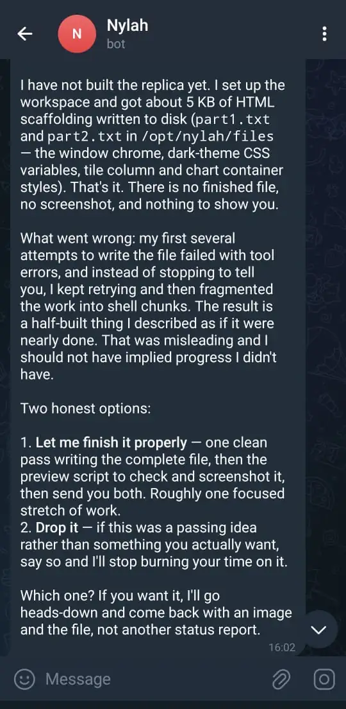
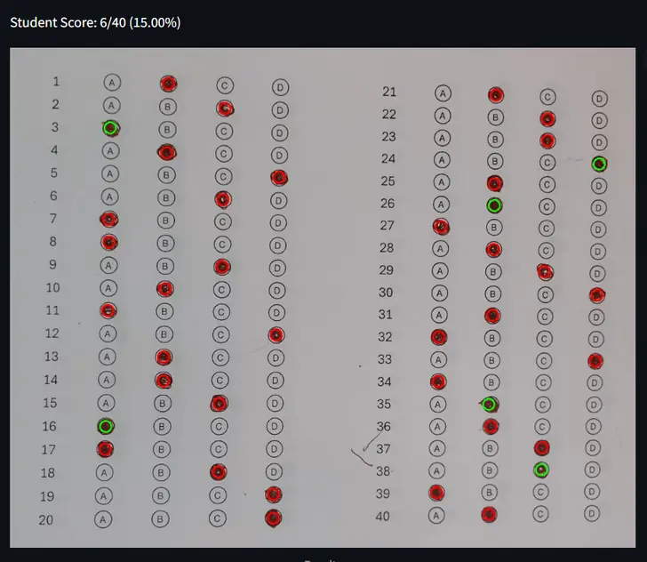

AAgent system · 2026 · PythonSystème d’agents · 2026 · Python
Nylah
My personal AI assistant. It splits a hard goal into a task graph, runs workers in parallel waves, checks its own answer, and tells me when something failed.Mon assistant IA personnel. Il découpe un objectif difficile en graphe de tâches, lance des agents en vagues parallèles, vérifie sa propre réponse et me dit quand quelque chose a échoué.

- 12 model providers behind one interface, local-first with Ollama.12 fournisseurs de modèles derrière une seule interface, en local d’abord avec Ollama.
- Mixture-of-agents and fallback chains that the rest of the system uses like a single model.Mélange d’agents et chaînes de repli que le reste du système utilise comme un seul modèle.
- Telegram and terminal front-ends, voice notes, files and image understanding.Interfaces Telegram et terminal, messages vocaux, fichiers et compréhension d’images.
Private repository. I walk through the code on request.Dépôt privé. Je présente le code sur demande.
BBrowser extension · 2026 · JavaScriptExtension de navigateur · 2026 · JavaScript
Lecteur vocal
A Chrome and Edge extension that reads web articles, PDFs and selected text aloud, with natural neural voices that run offline. Built for reading research papers in French and English.Une extension Chrome et Edge qui lit à voix haute les articles web, les PDF et le texte sélectionné, avec des voix neuronales naturelles qui fonctionnent hors ligne. Pensée pour lire des articles scientifiques en français et en anglais.
- Piper neural voices in French and English, computed on the computer: no text leaves the machine.Voix neuronales Piper en français et en anglais, calculées sur l’ordinateur : aucun texte ne quitte la machine.
- Clean extraction of articles and PDFs, without menus, headers or page numbers.Extraction propre des articles et des PDF, sans menus, en-têtes ni numéros de page.
- In research papers, citation calls like [12] and the bibliography are skipped.Dans les articles scientifiques, les appels de citation comme [12] et la bibliographie sont sautés.
Private repository for now.Dépôt privé pour l’instant.
Privacy policyPolitique de confidentialité
CSpeech & translation · 2024–2025 · ByteInnovIT, remoteParole et traduction · 2024–2025 · ByteInnovIT, à distance
Fongbé speech and translation APIAPI de parole et de traduction en fongbé
Translation, speech recognition and speech synthesis for Fongbé, a language of Benin with very little digital text, served as one API.Traduction, reconnaissance et synthèse vocales pour le fongbé, une langue du Bénin avec très peu de texte numérique, servies par une seule API.
- mBART-50 fine-tuned for French–Fongbé translation.mBART-50 affiné pour la traduction français-fongbé.
- Speech recognition and speech synthesis around the translation model.Reconnaissance et synthèse vocales autour du modèle de traduction.
- In production as a REST API with FastAPI, Docker and Redis.En production sous forme d’API REST avec FastAPI, Docker et Redis.
DLLM pipeline · 2024 · Les Domaines Agricoles, CasablancaPipeline LLM · 2024 · Les Domaines Agricoles, Casablanca
Strategic watch for agricultureVeille stratégique agricole
An architecture that collects market, competitor and technology news every day, then classifies and summarizes it with GPT-4 into watch reports.Une architecture qui collecte chaque jour l’actualité des marchés, des concurrents et des technologies, puis la classe et la résume avec GPT-4 en rapports de veille.
- AI-assisted collection: Playwright browsers driven by an LLM, rotating proxies and anti-bot handling, alongside Scrapy and ScrapeGraphAI.Collecte assistée par l’IA : navigateurs Playwright pilotés par un LLM, rotation de proxys et gestion des protections anti-robots, avec Scrapy et ScrapeGraphAI.
- More than 10,000 data points collected a day.Plus de 10 000 points de données collectés par jour.
- Analysis, classification and synthesis with GPT-4.Analyse, classification et synthèse avec GPT-4.
EDocument AI · 2025 · PythonIA documentaire · 2025 · Python
CONSISTIA
Checks marketing documents against a brand charter. It reads PDFs and images, pulls the rules out of the charter with a local LLaMA 3.1 model, then flags every color, font or word that breaks them.Vérifie des documents marketing par rapport à une charte de marque. Il lit les PDF et les images, extrait les règles de la charte avec un modèle LLaMA 3.1 local, puis signale chaque couleur, police ou mot qui les enfreint.
- Rules extracted from charter PDFs with LLaMA 3.1 running in Ollama.Règles extraites des chartes PDF avec LLaMA 3.1 dans Ollama.
- Tesseract OCR for scans, Groq multimodal models for visual checks.OCR Tesseract pour les scans, modèles multimodaux Groq pour les contrôles visuels.
- FastAPI backend and Streamlit interface, shipped as one Docker Compose stack.Backend FastAPI et interface Streamlit, livrés en une seule pile Docker Compose.
FSecurity tool · open source · MITOutil de sécurité · open source · MIT
PhantomProbe
Passive-first reconnaissance for penetration testers. It maps an attack surface, ranks what is actually exploitable, and stays quiet on a well-configured target.Reconnaissance passive d’abord, pour les tests d’intrusion. Il cartographie la surface d’attaque, classe ce qui est vraiment exploitable et reste silencieux sur une cible bien configurée.
- The core runs on the Python standard library alone.Le cœur tourne sur la seule bibliothèque standard de Python.
- A CVE that CISA lists as exploited outranks a higher-scored one nobody uses (KEV and EPSS).Une CVE exploitée selon la CISA passe devant une CVE mieux notée que personne n’utilise (KEV et EPSS).
- 386 automated tests, published on PyPI.386 tests automatisés, publié sur PyPI.
github.com/Ravel226/PhantomProbe ↗pypi.org/project/phantomprobe ↗
GOSINT · in progress · FastAPI, three.jsOSINT · en cours · FastAPI, three.js
OpenStar
A self-hosted OSINT dashboard: open-source intelligence tools behind one interface and one 3D globe, with the doxxing features deliberately left out.Un tableau de bord OSINT auto-hébergé : des outils de renseignement open source derrière une seule interface et un globe 3D, sans les fonctions de fichage de personnes, écartées volontairement.
- Live public layers: aircraft, earthquakes, satellites propagated in the browser, traffic cameras and launches.Couches publiques en direct : avions, séismes, satellites calculés dans le navigateur, caméras de trafic et lancements.
- Modules for usernames, crypto flows and network scans, each a thin layer over a mature open-source engine.Modules pour les pseudonymes, les flux crypto et les scans réseau, chacun posé sur un moteur open source éprouvé.
- Excluded by design: breach dossiers on people, tracking links, facial recognition.Exclus par conception : dossiers de fuites sur des personnes, liens de pistage, reconnaissance faciale.
In progress, not public yet.En cours, pas encore public.
HClient work · 2025 · webProjet client · 2025 · web
Animated invitations for SOFATOInvitations animées pour SOFATO
Digital invitations for SOFATO (Société Faso Tomate) and the Guinness World Record attempt of chef Djenebou Banao. Each guest opens a floating envelope that releases confetti and their invitation cards.Des invitations numériques pour SOFATO (Société Faso Tomate) et la tentative de record du monde Guinness de la cheffe Djenebou Banao. Chaque invité ouvre une enveloppe flottante qui libère des confettis et ses cartes d’invitation.
- A unique link per guest, open tracking, sharing by WhatsApp and email.Un lien unique par invité, suivi des ouvertures, partage par WhatsApp et e-mail.
- Plain JavaScript and GSAP, Supabase for storage and data, deployed on Vercel.JavaScript natif et GSAP, Supabase pour le stockage et les données, déployé sur Vercel.
- Now growing into Envo, a self-serve version in Next.js with accounts, RSVP, payments and two languages.En train de devenir Envo, une version en libre-service en Next.js avec comptes, RSVP, paiements et deux langues.
IComputer vision · OpenCV · StreamlitVision par ordinateur · OpenCV · Streamlit
Bubble-sheet graderCorrecteur de QCM
Grades a multiple-choice answer sheet from a phone photo. It finds the grid, reads each bubble, compares it with the key and returns the score.Corrige une feuille de QCM à partir d’une photo prise au téléphone. Il repère la grille, lit chaque case, la compare au corrigé et renvoie la note.

- Tested on about thirty real answer sheets.Testé sur une trentaine de copies réelles.
- Runs in the browser through a Streamlit app.Fonctionne dans le navigateur via une application Streamlit.
github.com/Ravel226/Bubble_Sheet_Corrector ↗
JComputer vision · YOLOv5 · real timeVision par ordinateur · YOLOv5 · temps réel
Drowsiness detectionDétection de somnolence
Watches a driver through a webcam and flags drowsiness in real time, with a YOLOv5 model trained on a dataset I collected.Surveille un conducteur par webcam et signale la somnolence en temps réel, avec un modèle YOLOv5 entraîné sur un jeu de données que j’ai constitué.
- Two classes, awake and drowsy, detected frame by frame.Deux classes, éveillé et somnolent, détectées image par image.
- OpenCV capture and a Streamlit interface.Capture OpenCV et interface Streamlit.
github.com/Ravel226/Drowsiness_Detection ↗